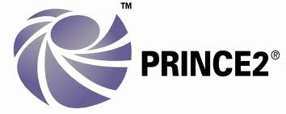
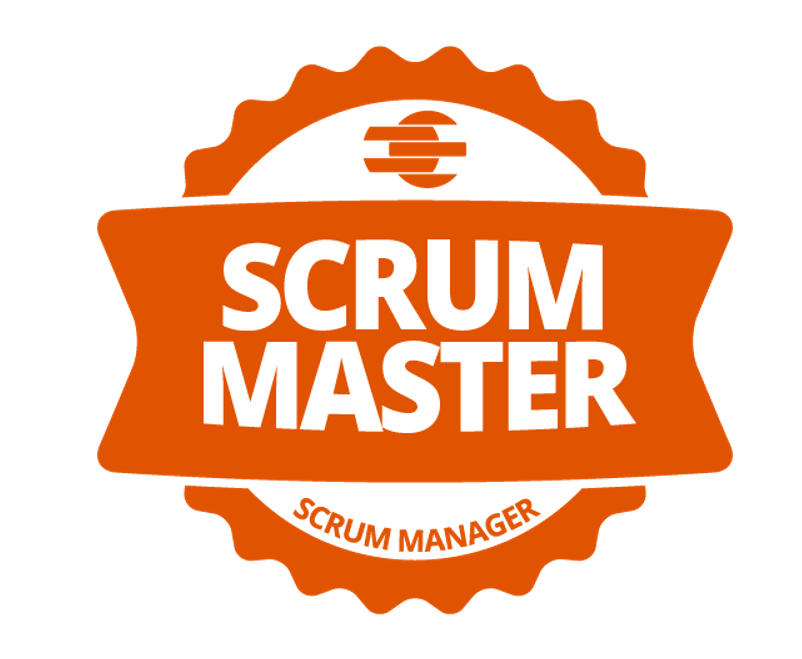

Más de 15 años en entornos IT críticos.
Sabemos anticipar problemas, reducir riesgos y tomar decisiones técnicas que funcionan en producción, no en laboratorio.
DC Solutions & Services se dedica a servicios y soluciones relacionados con el datacenter, infraestructura, networking, cómputo, almacenamiento (entornos SAN/NAS), con gran especialización en administración de bases de datos y consultoría sobre licitaciones públicas IT.
Somos un equipo de profesionales con más de 15 años en el sector IT público, habituados a trabajar con administraciones, organismos regulados y procesos de contratación complejos.
Combinamos experiencia técnica en datacenter y BBDD con conocimiento práctico de la contratación pública y los entornos regulados.
Sabemos anticipar problemas, reducir riesgos y tomar decisiones técnicas que funcionan en producción, no en laboratorio.
Un solo interlocutor, menos coordinación y decisiones más rápidas para proyectos complejos.
Conoces quién está detrás del proyecto desde el primer día y tienes interlocutores claros durante toda la ejecución.

